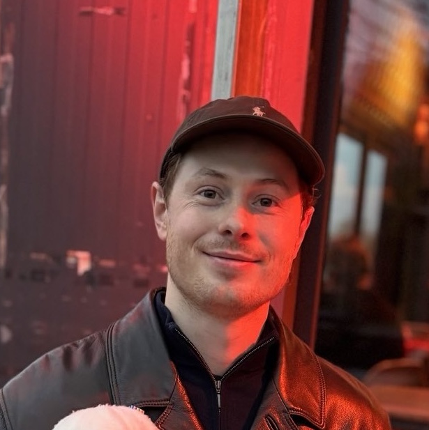

Data Science Manager
Jannik Hartmann
I lead machine learning projects with statistical rigour and clean engineering — turning messy data into decisions and systems teams rely on. Economist and statistician by training; eight years of professional experience as a data scientist across healthcare, finance, and public sector. Happiest when a problem needs both a careful statistical frame and a working system at the other end.

Profile
Interests
- Statistical Thinking
- Machine Learning
- Interpretability
- Survival Analysis
- Causal Inference
- Experimentation
- Mentoring
- ML Systems
- MLOps
- Clean Code
Personally
Father of one. Weightlifting (snatch and clean & jerk, not the general gym activity), and cycling.
CLAUDE.md instructions I cannot work without (very inspired by Robert Martin and changing frequently)
- Single Responsibility. Every class and function has one reason to change.
- Keep functions small. If it needs a comment to explain what it does, rename or split it.
- Fail at the boundary. Not every error needs catching — let it propagate to where it can be handled honestly.
-
Use
uv,pytest,pre-commit. For env management and running Python, tests, and keeping the code PEP 8-compliant.
Résumé
Experience
03/2023 — now
Data Science Manager, IQVIA
- Lead a team of 5 data scientists delivering 20+ production ML models for high-stakes clinical decisions at a hospital partner — flagging postoperative delirium risk, triaging to inpatient vs. outpatient care, supporting intervention choice in cardiac surgery, and forecasting multi-day trajectories (lab values, medication requirements, mortality) for patients awaiting heart transplantation
- All models ship as FastAPI services on Dockerised on-premise hospital infrastructure, integrated with a near-real-time clinical database and accessible from the hospital's main clinical information system; a clinician-facing dashboard surfaces patient trajectories
- Further workstreams: real-world persistence analysis of an siRNA cholesterol-lowering therapy versus competitor products, using real-world prescription data; modelling progression-free survival in multiple myeloma based on oncologist-reported data; and modelling side-effect risk in adjacent oncology treatments from clinical data and doctors' notes
05/2022 — 12/2022
Quantitative AI Researcher, Investments Management Start-Up
- Researched and shipped ML-based trading strategies and portfolio optimisation for a long-only crypto fund; owned live data ingestion, MLflow model management, and automated signal generation
- Led small-scale delivery projects and coached working students
07/2020 — 04/2022
Senior Data Scientist & Senior Consultant, IBM
- Technical lead on service-cost driver analysis and forecasting for immunoassay analysers (global healthcare, USA)
- Fraud detection with network analytics and ML (government agency)
- Conceptualised data science solutions for proposals and client workshops, coordinating sales strategy for IBM’s AI at Scale offering in DACH
- Hired and mentored junior data scientists
- Named IBM Top Technical Talent
11/2018 — 06/2020
Data Scientist & Consultant, IBM
- Built a named-entity-recognition PoC for legal references using semi-supervised labelling, CRF and LSTM models, and an annotation feedback loop (central bank)
- Developed and validated an operational-risk model via body-tail-split Monte Carlo in R (automotive bank)
- Developed a microservice-based NLP pipeline for document analytics
- Co-led the IBM Data Science Community Europe (250+ members)
06/2017 — 09/2017
Product Analytics Intern, DWS
03/2017 — 06/2017
Financial Risk Solutions Intern, Deloitte
09/2016 — 01/2017
Credit Risk Modeling Intern, Postbank
10/2015 — 08/2016
Student Teaching Assistant, University of Erfurt
Education
10/2017 — 10/2018
MSc in Statistics, University of Warwick
10/2013 — 09/2016
BA in Economics and Social Sciences, University of Erfurt